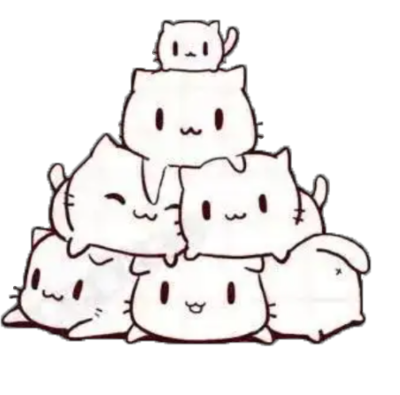

鲜满宫堂
《穿越究竟为哪般篇》
赵氏：这是苏家祖传的菜谱
小鱼(主角)：穿越原来是为了发家致富↖（＾ω＾）↗
太后：这是皇家的宗族秘史
小鱼：穿越原来是为了宫斗升级( ⊙ o ⊙ )
国师：这是神秘的武功秘籍
小鱼：穿越原来是为了拯救苍生(⊙_⊙)
皇帝(喵攻)：喵呜~朕今天要吃红烧鱼香辣蟹油焖大虾~
小鱼：穿越其实是喂猫来的……吧
小时候，为了争得养育贵子的权利……
妃嫔甲：我有无双的医术，保你安枕无忧
妃嫔乙：我有绝顶的智慧，保你笨鸟先飞
妃嫔丙：我有强大的母家，保你登上皇位
太后：……我有布老鼠
离王、景王：麻麻~~~(⊙ω⊙)
为了争夺跟皇长子玩耍的权利……
十七叔：我有画了九饼的毛肚皮
十三叔：我有黑白条的大尾巴
弟弟：我有红色的大老苏！
小鱼：我有鱼肉糊糊、虾肉糊糊、蟹肉糊糊……
大毛：咪？（刚满月，听不懂人话）
《皇权争夺是很凶残的篇》
喵攻：父皇，朕身体不好，还是您来理政吧
喵爹：寡人年老体弱，不宜操劳
喵攻：七叔，你与父皇一样，不如……
七叔：当年夺位，我已心灰意冷，不愿再回朝堂
喵攻：三哥……
景王：嗷嗷，别跟我说话，双十二大甩卖了，海怪降价处理，只要998！
喵攻：……
安国塔课堂答疑小鱼：
山河图鉴跟鱼有什么关系？
十三叔：山河事关社稷！
十七叔：图鉴事关祖训！
国师：山河图鉴事关国运！
小鱼：……
安家祖训：固我河山，守我鲜鱼！
关于去海上远征营救太上皇……
喵攻：这船似乎缺了点什么
景王：要加上网，打架的时候别飞出去
十七叔：要种上狗尾巴草，清新空气
十三叔：要放几个烧烤炉子，晚上喝啤酒
国师：把整个甲板换成软垫，本座要夜观星象
弟弟：……这样尊的能把父皇找回来么？
见到太上皇之后……
喵爹：说好的营救父皇我呢？
七叔：说好的救皇叔于水火呢？
五伯：过来，伯父要跟你们谈谈人生。
九叔：（左右看，想不出要说什么）对，过来！
喵攻、景王、太纸：好多鱼，吃的！
国师：阳光正好，适合观星(睡觉)
十七叔：老鼠老鼠老鼠老鼠！
在得知荒岛的神奇屏障之后……
喵攻：这么说的话，只有跟皇家有关的才能上岛
小鱼：上古神兽果然厉害
喵攻：那以前鲛人怎么靠近的？
皇祖叔：食物当然可以靠近(⊙ω⊙)
小鱼：祖宗，给我摸摸毛毛（?﹃?）
景王：这么大只！来打一架！
忠王：祖宗，我给你讲讲安家的发家史吧
国师：（抬爪，拍）竟然拍不动！
喵攻：……
《储君的教育要从毛球抓起篇》
喵攻：（仰头）作为太子，要有威严
太纸：（仰头）咪呜
喵攻：（抬爪）作为太子，要有气势
太纸：（抬爪）咪！
喵攻：（语重心长）作为太子，更要独立
太纸：咪？
喵攻；(╰_╯)#从老子的肚皮上下去
